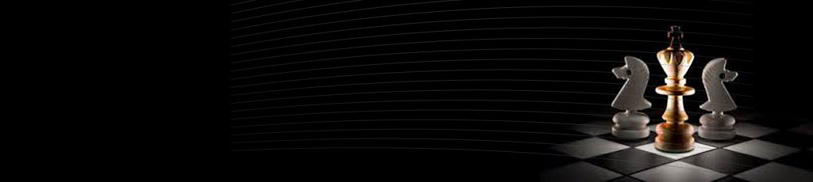
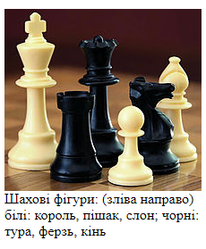
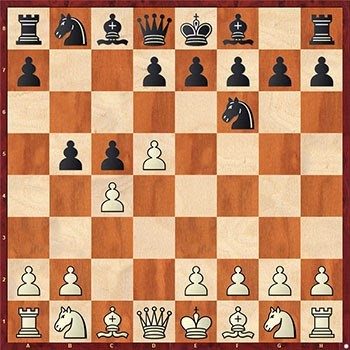
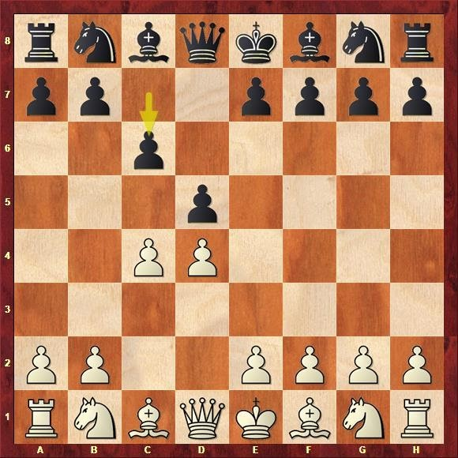
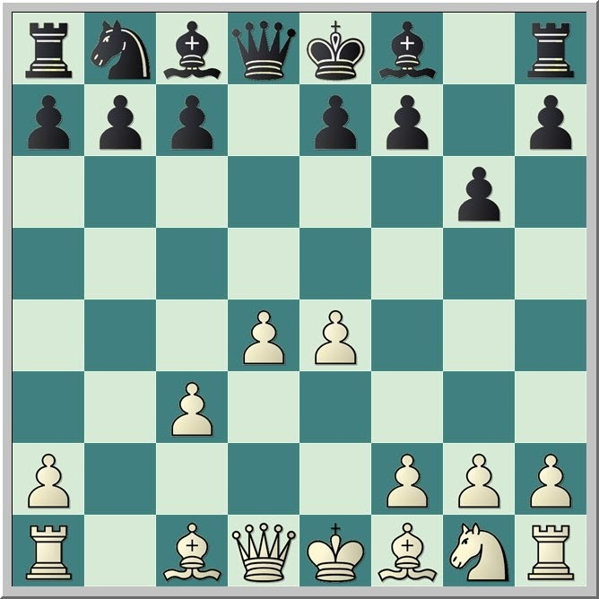
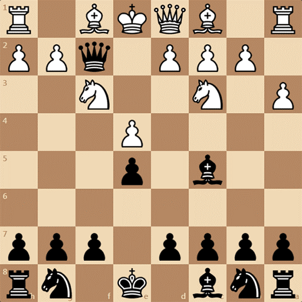
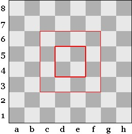
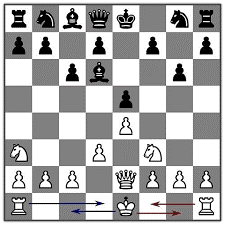

Як майже завжди перемагати в шахах
Ця стаття допоможе краще грати в шахи тільки новачкам

1.Усвідомте цінність кожної фігури і захищайте її відповідно. Зрозуміло, що король є найбільш важливою фігурою на дошці, адже його втрата веде до поразки в грі. Незважаючи на це, не варто вважати інші фігури марним гарматним м'ясом. Згідно математики і геометрії шахової дошки, деякі фігури куди цінніше, ніж інші. Пам'ятайте про це, коли будете забирати чужі фігури. Наприклад, не варто піддавати ризику найціннішу туру за тим, щоб позбутися коня противника.Кожна з фігур окрім короля має свою цінність відповідно до її сили. Король не підлягає оцінюванню, адже його атака означає програш партії. Загальноприйняті співвідношення цінності фігур:
- пішак=1;
- слон=3;
- кінь=3;
- тура=5;
- ферзь=9;
- король-найслабша фігура, яку треба захищати.
2. Зрозумійте мету гарного дебюту. Дебют - це перші кілька ходів у грі, які визначають вашу загальну стратегію і розстановку фігур на всю партію. Метою початкових ходів є розгортання (відведення від початкових полів) якомога більшої кількості сильних фігур. Для гарного початку слід врахувати кілька ключових моментів:
- переміщайте пішаки до центру дошки, щоб відкрити дорогу сильнішим фігурам. Найпростішим, але дуже ефективним ходом буде перемістити королівського пішака на 2 клітини вперед, а слідом перемістити на 2 клітини вперед ферзевого пішака, якщо тільки це не буде ризиковано після ходу суперника. Це відкриває шлях слонам, прискорює рокіровку, і за допомогою правильних ходів у вас вийде захисна фортеця;
- ваш дебют також буде залежати від того, чи граєте ви чорними або білими фігурами. Так як білі ходять першими, вам слід грати агресивно і не дати ініціативі перейти до супротивника. Чорним же слід організувати оборону, чекаючи, поки білі підставляться під удар;
- ніколи не рухайте одну фігуру два ходи поспіль, якщо тільки їй не загрожує небезпека бути зметеною з дошки. Чим більше фігур ви зможете пересунути, тим більше ходів потрібно противнику для протидії;
- не ходіть занадто багато пішаками. Мета вдалого дебюту - ефективне розгортання сильних фігур. Переміщаючи занадто багато пішаків, ви можете подарувати супернику перевагу в темпі;
- намагайтеся не ходити ферзем занадто рано. Багато новачків роблять помилку, переміщаючи ферзя занадто рано, але це може поставити його під загрозу, і вам доведеться ходити їм знову, втрачаючи темп;
- з огляду на все це, ознайомтеся зі списком дебютів, які роблять гросмейстери на турнірах з шахів.

3. Заздалегідь продумайте свою стратегію на 4-5 ходів вперед, роблячи кожен хід частиною більш витонченої атаки. Для перемоги в шахах ви повинні постійно думати на кілька кроків вперед, готуючи великі і складні атаки, щоб перехитрити свого супротивника. Ваш перший хід визначає всю подальшу гру і веде до першії атаки або контролю певних ділянок дошки. Кращий спосіб навчитися планувати наперед - відпрацювати декілька поширених дебютів:
- іспанська партія - класичний дебют, суть якого полягає у виведенні слонів для атаки. Перемістіть пішака перед королем на два поля вперед, потім коня на F3 (граючи за білих). Завершіть дебют, перемістивши слона через всю дошку, поки перед ним не виявиться вільне поле, за яким буде стояти ворожий пішак;
- англійський початок - це повільний і гнучкий дебют. Наведіть пішака C2 вгору на поле C4, потім пересуньте пішака G2 на G3, щоб звільнити слона (чорні рухаються до центру) або коня (якщо чорні підуть по краях);
- проверніть ризикований королівський гамбіт. Після Боббі Фішера кожен гросмейстер знайомий з цим дебютом, здатним вивести з рівноваги будь-якого новачка. Просто перемістіть пішаки з E2 і F2 вперед на два поля в перші два ходи. При цьому чорні часто переходять в атаку, реагуючи на ваше відкриття, але незабаром ваша стіна пішаків доставить їм чимало проблем;
- щоб взяти під контроль центр дошки, використовуйте ферзевий гамбіт. Білі переміщують пішака на D4, тим самим витягаючи чорного пішака на D5. Після цього, білі, як правило, відповідають переміщенням пішаки на C4. Цей маневр переносить протистояння на центр і відкриває дорогу для вашого ферзя і слона.

4. Спробуйте поставити 4-ходовий «дитячий мат», щоб миттєво виграти партію. Проблема в тому, що дана стратегія спрацює лише один раз, так як досвідчений гравець розкриє ваш план і відведе короля з-під удару. Незважаючи на це, дитячий мат є відмінним способом застати новачка зненацька і швидко здобути перемогу в грі. Подивимося, в чому ж він полягає і як від нього захиститися.
- Граючи чорними: пішак рухається на 1 поле вгору (E7-E6), слон на C5, ферзь на F6, ферзь на F2.
- Граючи білими: пішак вгору на 1 поле (E2-E3), слон на C4, ферзь на F3, ферзь на F7.
- Захист від дитячого мату: негайно витягайте коней, якщо бачите, що противник планує поставити вам дитячий мат. Жоден гравець не захоче пожертвувати ферзем, тільки щоб позбутися вашого коня. Можете також виконати ідентичні ходи, але замість того щоб перемістити ферзя по дошці, залиште його на E7, поруч з королем.
Майте на увазі: дитячий мат вийде поставити, тільки якщо ви граєте з новачком, який ще не дуже добре розбирається в шахах і може не розгадати ваш план.

5. Контролюйте центр дошки, щоб контролювати гру. Під час партії в шахи ваша головна задача полягає в контролі над центром дошки, особливо це стосується чотирьох полів посередині. Все тому, що звідти можна здійснювати атаку в будь-якому напрямку, дозволяючи вам керувати темпом і ходом гри. Кінь, наприклад, має 8 потенційних ходів з центру дошки, а по краях дошки - лише 1-2. Існує два основних способи домогтися контролю над центром:
- ви можете закріпитися в центрі дошки, повільно переміщуючи туди кілька фігур. Нехай коні і слони стоять по краях і грають роль підтримки, там вони зможуть атакувати фігури противника в разі нападу. Подібний неквапливий розвиток подій використовується найчастіше;
- а ось візит з флангів є більш сучасним стилем гри, згідно з яким контроль над центром здійснюється по краях дошки. Ваші тури, ферзь і коні піднімаються по краях дошки, тим самим не даючи противнику безоплатно захопити центр.
6. Розвивайте по одній фігурі за раз. Покінчивши з дебютом, переходите до розгортання бойових порядків. Ви повинні вивести всі свої фігури з початкових полів, переміщюючи їх на більш ефективні для них місця.
Якщо можете, проведіть фігури по черзі. Не ходіть з однієї і тієї ж фігури два рази поспіль, якщо, звичайно, вам не потрібно буде відводити її з-під удару або попсувати сили противника.
Переміщати всі фігури теж необов'язково. Просування всіх пішаків не допоможе вам перемогти, так як порушить ключову лінію оборони, що оберігає вашого короля.

7. Навчіться рокіровці. Рокіровка - це особливий хід, при якому король «перестрибує» через туру, приймаючу роль стіни проти прийдешньої атаки, і яку оберігають розміщені над нею пішаки. Це вкрай ефективна тактика захисту, особливо для новачків в шахах. Вам знадобиться зробити наступне:
- очистіть простір між вашим королем і турою, прибравши з дороги слона і коня (а може, і ферзя). Постарайтеся залишити на місці якомога більше пішаків. Даний хід можливий в обидва боки;
- за один хід перемістіть туру і короля один до одного, і в точці зустрічі поміняйте їх місцями. Тобто, якщо рокіровка проводиться з боку короля, то король виявиться на поле G1, а тура - на поле F1;
- зверніть увагу, що до скоєння рокіровки король і тура повинні залишатися на місці. В іншому випадку подібний хід заборонений.
- в основному перемога в шахах досягається вашою спроможністю прочитати свого противника, при цьому не дозволяючи йому прочитати себе. Не робіть ходу, в якому ви не впевнені;
- ви повинні постійно прораховувати гру на кілька ходів вперед. А це означає, що ви повинні знати всі можливі ходи своїх фігур і представляти реакцію свого супротивника на ці ходи. Це вміння не так-то просто освоїти, не кажучи вже про те, скільки часу це займе.
Якщо ви добре засвоїли цю інформацію спробуйте зіграти проти комп'ютера, натиснувши на кнопку практика